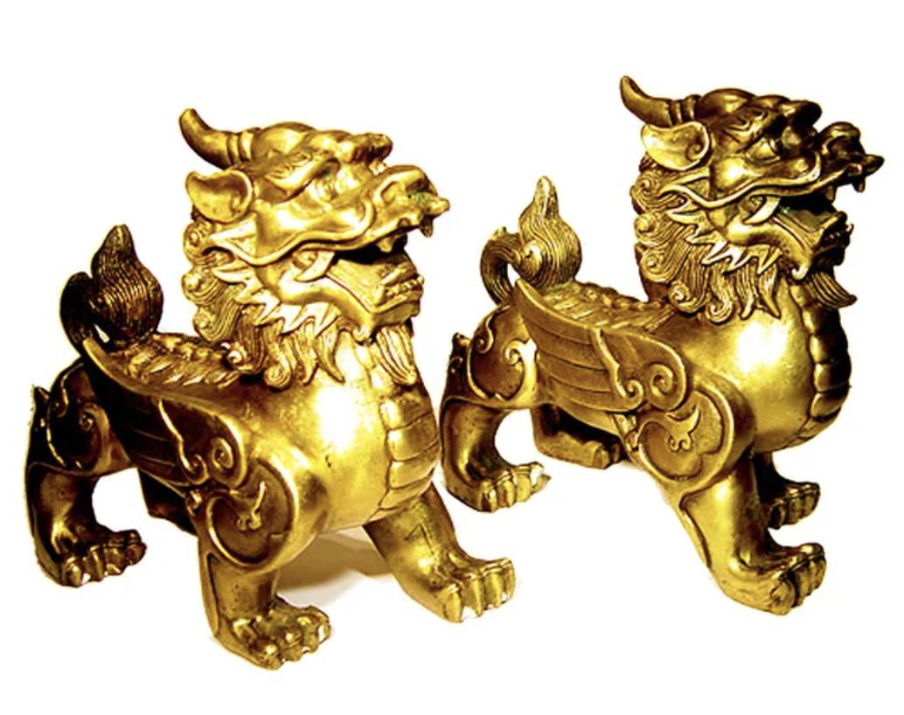

In Chinese legend, the Pixiu is an auspicious creature said to bring wealth and fortune, believed to possess the quality of "only letting money in, never letting it out," capable of biting and drawing fortune from all directions. In ancient times, it was also called "Bixie" (the evil-repeller) or "Tianlu" (heavenly blessing). In feng shui practice, it is commonly used to attract wealth and treasure, protect the home from evil spirits, and ward off misfortune during one's zodiac conflict year.
"Conflicting with the year's zodiac sign" (犯太岁) is a concept in Chinese traditional numerology and folk belief. When an individual's zodiac sign clashes with that year's ruling zodiac sign, it can result in greater fluctuations in fortune, obstacles in all endeavors, or emotional instability—this is called "conflicting with the zodiac."

2025 is a year in which my zodiac conflicts with the ruling sign. For this reason, I wanted to create my own Pixiu to dispel misfortune and invite good fortune.
In Chinese numeral symbolism, "three" represents "heaven, earth, and humanity." The classical text Shuowen Jiezi states: "Three is the way of heaven, earth, and humanity; it is counted from three." This means "three" embodies the "three realms"—heaven, earth, and people.

Therefore, my Pixiu is a divine beast with three eyes to see and three legs to walk.
I used photographs of my grandfather taken during his lifetime as its skin, fixed with red thread onto an iron framework. At the same time, I created a digital version of the Pixiu using Blender.